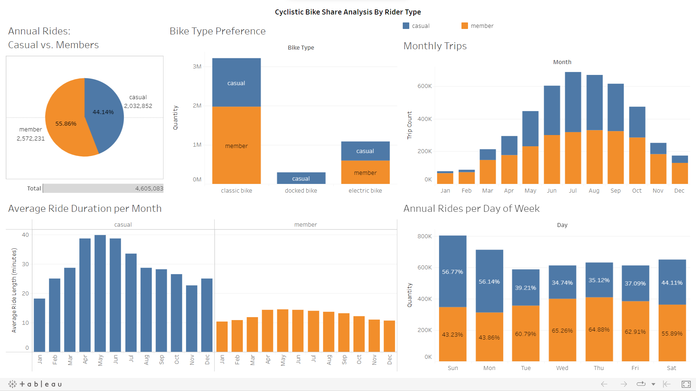

Cyclistic
Bike Share Analysis
This is the capstone project I developed while earning my Google Data Analyst Certificate.
Introduction
In this project, I analyzed historical trip data to gain insights into the usage patterns of annual members and casual riders, aiming to design an effective marketing strategy to convert casual riders into annual members and maximize Cyclistic's success.
Goal
Provide valuable insights to the marketing team about how annual members and casual riders use Cyclistic bikes differently. Counsel the marketing team to develop a strategy to convert casual riders into annual members.
Results
The project's results are presented through a Tableau visualization, offering a clear representation of the data analysis. In addition, a concise report at the end of this page is included, summarizing the key conclusions and recommendations.
Tools used:
Case - How do annual members and casual riders use Cyclistic bikes differently?
- Between April 2021 and March 2022 (12 months), there were 4,605,083 total rides, with 56% completed by members and 44% by casual riders.
- Both casual riders and members mostly used classic bikes, followed by electric bikes. However, casual riders utilized docked bikes more frequently compared to members. To convert casual riders into Cyclistic members, it is recommended to focus on promoting the use of docked bikes.
- Hotter months experienced a higher number of riders compared to colder months. To maximize awareness of the scheme, targeted advertisements should be run during the summer.
- Cyclistic members, on average, have shorter ride durations than casual riders. To attract more casual riders and convert them into members, promotions should emphasize longer ride options.
- Members primarily ride on weekdays, while casual riders prefer weekends. Promotional efforts should highlight the benefits of using Cyclistic for daily commuting or school trips to attract more users during weekdays.
- A significant number of rides occur on Saturdays and Sundays for both members and casual riders. Running advertising campaigns on weekends can help increase awareness and attract more casual riders to join the scheme.
- Kaggle (data collection): Click here.
- Git Hub (SQL code for cleaning and analysis process): Click here.
- Tableau (visualization): Click here.
I conducted an analysis to understand the differences in Cyclistic bike usage between annual members and casual riders. The insights include the count of annual rides by rider type, frequency of usage by month, and Bike type preference by rider type. Stakeholders can refer to an interactive Tableau dashboard for more details, and all the analysis SQL code is available for reference.
Visualization:
Click here to interact with the Tableau Visualization.
-
